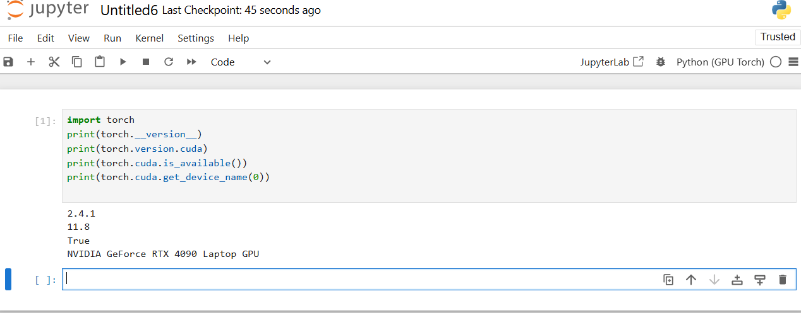

✅ Full Guide: Running Jupyter Notebook on GPUs¶
This guide helps you set up Jupyter Notebook with GPU support using Anaconda, CUDA, cuDNN, and deep learning libraries like PyTorch or TensorFlow.
‚öôÔ∏è Step 1: Install Anaconda¶
-
Download and install from:
üëâ https://www.anaconda.com/products/distribution -
After installation, launch Jupyter Notebook via:
jupyter notebook
This opens Jupyter Notebook in your browser.
‚öôÔ∏è Step 2: Install CUDA Toolkit¶
CUDA enables your Python libraries (e.g., TensorFlow, PyTorch) to run on NVIDIA GPUs.
-
Download from:
üëâ https://developer.nvidia.com/cuda-downloads -
Choose the version that matches:
- Your GPU model
-
Your Operating System
-
To verify your GPU details:
nvidia-smi
‚öôÔ∏è Step 3: Install cuDNN Library¶
cuDNN accelerates deep learning on GPUs.
-
Download from:
üëâ https://developer.nvidia.com/cudnn -
Match cuDNN version with your installed CUDA version.
After downloading:
- Extract the files.
- Copy bin/, lib/, and include/ folders into your CUDA installation directory (usually /usr/local/cuda/ on Linux).
⚠️ cuDNN must be manually installed — not via conda/pip.
‚öôÔ∏è Step 4: Create a Conda Environment (Python 3.8)¶
conda create --name gpu_env python=3.8
conda activate gpu_env
‚öôÔ∏è Step 5: Install Required Packages¶
Choose one of the following options depending on your framework preference:
ü߆ Option A: TensorFlow + Keras (GPU-enabled)¶
conda install -c anaconda tensorflow-gpu keras-gpu
üî• Option B: PyTorch (GPU-enabled, recommended)¶
conda install pytorch torchvision torchaudio pytorch-cuda=11.8 -c pytorch -c nvidia
⚠️ Replace
11.8with your actual CUDA version.
➕ Optional: Add data science packages¶
conda install jupyter numpy pandas matplotlib scikit-learn
‚öôÔ∏è Step 6: Configure Jupyter to Use GPU Environment¶
python -m ipykernel install --user --name gpu_env --display-name "Python (GPU)"
✅ This registers the environment as "Python (GPU)" in the Jupyter kernel list.
üöÄ Step 7: Launch Jupyter Notebook¶
jupyter notebook
- Click New Notebook
- Choose the "Python (GPU)" kernel
✅ Step 8: Verify GPU is Being Used¶
Run this in a notebook cell:
import torch
torch.cuda.is_available()
Expected Output:
True
If True, your environment is GPU-enabled. üéâ
ü߆ Quick Troubleshooting¶
| Problem | Fix |
|---|---|
torch.cuda.is_available() is False |
Make sure CUDA and cuDNN are properly installed |
| Kernel not showing in Jupyter | Ensure you ran the ipykernel install command |
| Version mismatch / compatibility | Match TensorFlow or PyTorch to your CUDA version |
| Model runs slow | Check if code is accidentally running on CPU (torch.device("cuda")) |
Once you configure the versions of CUDA, cudnn and jupyter, you go over steps 7 and 8 again and you should find your notebook running on GPU.
